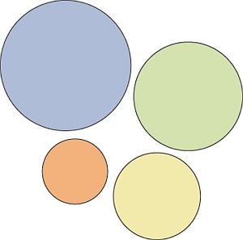
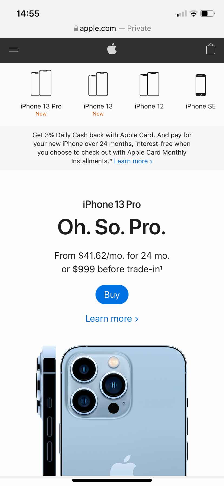
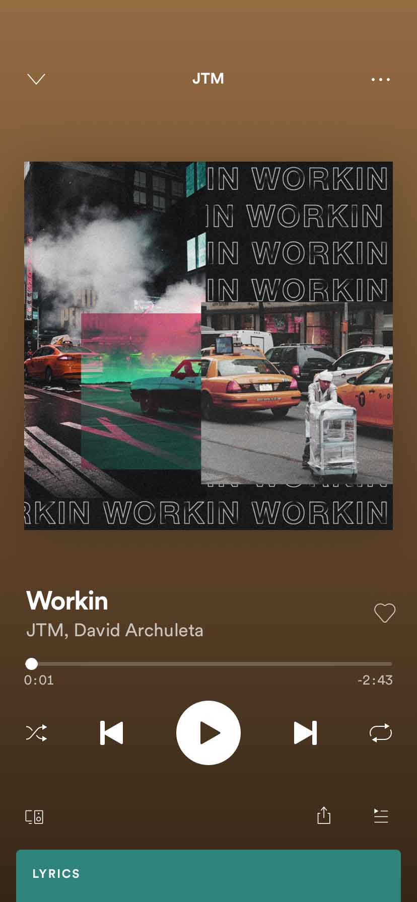
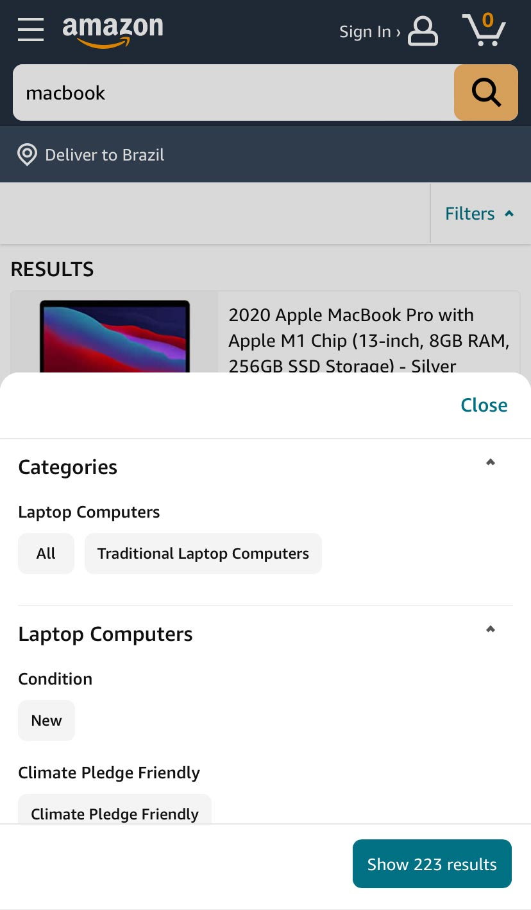

1. Visual Hierarchy
Squeaky wheels get the grease, and prominent visuals get the
attention. Visual hierarchy is one of the most important
principles behind good web design. It’s the order in which the
human eye perceives what it sees.
Exercise. Please rank the circles in the order of
importance:

Without knowing anything about these circles, you were able to
rank them easily. That’s a visual hierarchy.
Certain parts of your website are more important than others
(forms, calls to action, value proposition, etc.), and you want
those to get more attention than the less important parts.
If you website menu has 10 items, are all of them equally
important? Where do you want the user to click? Make important
links more prominent.
Look at this example:

Hierarchy doesn’t come only from size. Apple makes the “Buy”
call-to-action button more prominent by using color. This is a
good example using Visual Hierarchy.
Organization: CX Optimization Agency |
Link
2. Fitt’s Law
Fitt’s law stipulates that the time required to move to a target
area (e.g. click a button) is a function of the distance to the
target and the size of the target. In other words, the bigger an
object and the closer it is, the easier it is to use.
Spotify makes it easier to hit “Play” than other buttons:

On the mobile phone app, they also place the play button in an
easy-to-tap location.
Bigger isn’t always better. A button that takes up half the screen
isn’t a good idea, and we don’t need a mathematical study to tell
us. Even so, Fitt’s Law is a binary logarithm. This means that the
predicted results of the usability of an object run along a curve,
not a straight line.
A tiny button is much easier to click when given a 20% size
increase, whereas a very large object, given the same 20% boost in
size, won’t deliver the same benefits in usability.
This is similar to the rule of target size. The size of a button
should be proportional to its expected frequency of use. You can
use mouse tracking to see which buttons people use the most, then
make popular buttons bigger (easier to hit).
Let’s imagine there’s a form you want people to fill. At the end
of the form, there are two buttons: “Submit” and “Reset” (clear
fields).
99.9999% want to hit “Submit.” Hence, the button should be much
bigger than ‘reset’.
Look at this example:
All the Instagram main buttons are near to your fingers. It makes
the use of the app easier and helps you to enjoy the main
functionalities available.
Organization: CX Optimization Agency |
Link
3. Hick’s Law
Hick’s Law says that with every additional choice increases the
time required to take a decision.
You’ve experienced this countless times at restaurants. Menus with
huge options make it difficult to choose your dinner. If it
offered two options, making a decision would take much less time.
This is similar to the Paradox of Choice—the more choices you
give, the easier it is to choose nothing. Both principles come
into play with web design.
The more options a user has on your website, the more difficult it
is to use (if it’s used at all). We need to eliminate choices. To
make a better web design, focus on eliminating distracting options
throughout the design process.
In an era of infinite choice, people need better filters! If you
sell a huge number of products, add better filters for easier
decision-making.

Amazon is a good example. Using filters to limit the choices
will make you reach and buy the product you want faster. This law
is a good one to use in your projects.
Organization: CX Optimization Agency |
Link